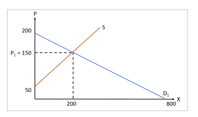
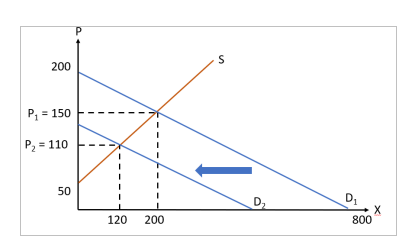
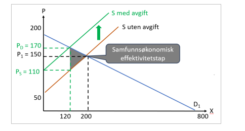
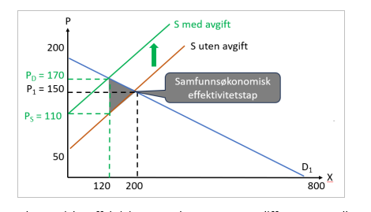
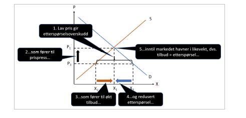
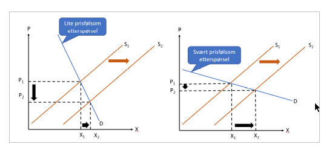

Anta at et marked med fullkommen konkurranse har slik etterspørsel og slikt tilbud:
Etterspørsel: \(X^{D} = 800 - 4p\)
Tilbud: \(X^{S} = 2p - 100\)
Her er XD etterspurt mengde, XS er tilbudt mengde mens p er prisen.
Svar på følgende spørsmål:
Hva er markedsprisen og hvilken mengde vil bli omsatt i markedet? Hva er konsument-overskuddet, produsentoverskuddet og det samfunnsøkonomiske overskuddet? Vis hvordan du har kommet fram til svaret og illustrer.
Vi starter med å beregne markedslikevekt kjennetegnet ved at tilbud er lik etterspørsel
\[\begin{aligned}
2p-100=800-4p \\
6p=900
p=150
\end{aligned}\]
Dvs. likevektsprisen er 150. Den tilhørende likevektsmengden finnes ved å sette likevektsprisen inn i etterspørselsfunksjonen og/eller tilbudsfunksjonen, noe som gir oss: \[
x=200
\] Figuren nedenfor illustrerer tilbud, etterspørsel og likevekt.  Konsument- og produsentoverskudd er:
\[\begin{aligned}
KO=\frac{1}{2}(200-150)200=5000\\
PO=\frac{1}{2}(150-50)200=10000
\end{aligned}\]
Samfunnsøkonomisk overskudd som er summen a konsument- og produsentoverskuddet er dermed 15 000.
Anta at etterspørselen øker (fra \(X^{D} = 800 - 4p\)) til \(X^{D} = 560 - 4p\) alt annet like. Hva skjer med pris og mengde i markedet? Vis hvordan du kom fram til svaret og illustrer.
Vi beregner ny markedslikevekt kjennetegnet ved at tilbud er lik ny etterspørsel:
\[\begin{aligned}
2p-100=560-4p \\
6p=660 \\
p=110
\end{aligned}\]
Dvs. likevektsprisen har falt (fra 150) til 110. Den nye likevektsmengden finnes ved å sette likevektsprisen inn i den nye etterspørselsfunksjonen og/eller tilbudsfunksjonen, noe som gir oss: \[
x=120
\] Figuren nedenfor illustrerer tilbud, etterspørsel og likevekt. # 
Beregn priselastisiteten til etterspørselen og priselastisiteten til tilbudets gitt at prisen er lik likevektsprisen som du beregnet i første delspørsmål. Vis hvordan du kommer fram til svaret og illustrer.
Dette kan gjøres på flere vis. En mulighet er å ta utgangspunkt i følgende formel for priselastisitet: \[
\epsilon=\frac{\Delta X}{\Delta p}\frac{p}{X}
\] Vi har at for etterspørselen så er ∆X/∆p = -4 mens for p = 150 så er X = 200. Dermed er priselastisiteten: \[
\epsilon=-4\frac{150}{200}=-3
\] Vi har at for tilbudet så er ∆X/∆p = +2 mens for p = 150 så er X = 200. Dermed er priselastisiteten: \[
\epsilon=2\frac{150}{200}=\frac{3}{2}=1.5
\] Dvs både etterspørsel og tilbud er priselastisk, men etterspørselen er dobbelt så priselastisk som tilbudet. # 
La oss nå anta at etterspørselen og tilbudet er som først spesifisertj innledningsvis i oppgaven. Anta at produsentene blir pålagt å betale en stykkavgift på TTT kroner per enhet de selger.
Hvordan vil stykkavgiften påvirke prisen som konsumentene betaler og prisen som produsenten betaler, samt omsatt mengde? Hvordan vil stykkavgiften påvirke konsument-overskuddet, produsentoverskuddet og det samfunnsøkonomiske overskuddet? Hvem bærer den største byrden av stykkavgiften – konsumenter eller produsenter? Og hva er det samfunnsøkonomiske effektivitetstapet? Vis hvordan du kommer fram til svaret og illustrer.
Dette kan beregnes på ulike vis. En mulighet er å operere med ulike priser for konsumenter og produsenter ved beregning av likevekt (ds. Tilbud = Etterspørsel):
\[\begin{aligned}
2p^S-100=800-4p^D \\
2p^S+4p^D=900
\end{aligned}\]
Vi vet at differansen mellom de to prisene tilsvarer stykkavgiften på kr 60,-. Vi har derfor at \(p^D = p^S + 60\). Erstatter vi \(p^D\) med \(p^S + 60\) får vi:
\[\begin{aligned}
2p^S-100=800-4(p^S+60) \\
2p^S+4p^S=800+100-240=660 \\
p^S=\frac{660}{6}=110
\end{aligned}\]
Dvs. i likevekt med skatt blir prisen til produsentene kr 110. Prisen som konsumentene tilsvarer produsentprisen pluss avgiften på kr 60 og blir således 170: \[
P^D=110+60=170
\] Den nye likevektsmengden finnes ved å sette likevektsprisen inn i den nye etterspørselsfunksjonen og/eller tilbudsfunksjonen, noe som gir oss: \[
X=120
\] Figuren nedenfor illustrerer likevekt med og uten avgift.  Det samfunnsøkonomiske effektivitetsapet beregnes som differansen mellom marginal betalingsvilje (gjenspeilet i etterspørsel) og grensekostnad (gjenspeilet i tilbud) for de enhetene som avgiften fortrenger. Dette er vist i figuren og kan beregnes som følger:
Oppgave 2
Betrakt markedet for studenthybler på et studiested, og anta at dette kan betraktes som et marked med fullkommen konkurranse der antall kvadratmeter er mål på mengde og leiepris per kvadratmeter er mål på pris.
Jo høyere leiepris per kvadratmeter, jo flere hybeleiere vil ventelig finne det bryet verdt å leie ut sine hybler til studenter – derfor øker tilbudet av kvadratmeter til leie med leieprisen per kvadratmeter.
Jo høyere kvadratmeterpris, jo færre kvadratmeter vil studentene ventelig ønske å leie – dermed avtar etterspørselen etter kvadratmeter med leieprisen per kvadratmeter.
Anta at det er mange studenter som ikke får leid det antall kvadratmeter de ønsker seg til den gjeldende leieprisen per kvadratmeter. Hva tror du vil skje med leieprisen på kvadratmeter – vil den falle, stige eller ingen av delene? Gi en faglig begrunnelse for ditt svar.
Det er her antydet en situasjon med etterspørselsoverskudd. Det vil si at til den gjeldende prisen så er etterspurt mengde større enn tilbudt mengde. Dette er vis i figuren nedenfor der den fallende kurven D er etterspørselen etter kvadratmeter og den stigende kurven S er tilbudet av kvadratmeter. Prisen P3 vil innebære etterspurt mengde X3 overstiger tilbudt mengde X2, altså etterspørselsoverskudd. Dette vil gi et press på prisene som vil føre til at prisene vil begynne å stige. Høyere pris vil redusere etterspørselen og øke tilbudet og dermed bidra til redusert etterspørselsoverskudd. Markedet forventes etter hvert å havne i likevekt, der etterspurt mengde er lik tilbudt mengde slik tilfelle er med prisen P1 i figuren. # 
Anta at høgskolen eller universitetet på studiestedet bestemmer seg for å øke opptaket av studenter og at det av den grunn blir flere studenter som etterspør hybel.
Vil dette ha betydning for leieprisen per kvadratmeter og hvor mange kvadratmeter som er til utleie, og eventuelt hvordan? Og vil utslagene i leiepriser og/eller antall kvadratmeter til utleie være store eller små? Gi et faglig begrunnet svar, og vurder om svaret på alle spørsmål er entydige.
Dersom man bygger flere studenthybler så vil tilbudet av studenthybler øke alt annet like, dvs. positivt tilbudsskift fra S1 til S2 som vist eksempler på i de to figurene nedenfor. Det antas at markedet er i utgangspunktet i likevekt med likevektspris P1 og likevektsmengde X1. Det positive tilbudsskiftet vil bidra til at markedet havner i ny likevekt med ny likevektspris P2 og ny likevektsmengde X2. Som figurene illustrerer vil pris falle og mengde øke. Det som imidlertid skiller de to figurene fra hverandre er prisfølsomheten (eller priselastisiteten) til etterspørselen. I figuren til venstre er etterspørselen lite prisfølsom og som et resultat av det vil det økte tilbudet primært slå ut i lavere pris og i liten grad i økt mengde. I figuren til høyre er etterspørselen derimot svært prisfølsom og som et resultat av det vil det økte tilbudet primært slå ut i høyere mengde men i liten grad i lavere pris. De to figurene viser dermed at vi ikke kan vite om tilbudsskiftet vil primært slå ut i lavere pris eller primært i økt mengde uten at vi vet mer om etterspørselens prisfølsomhet. # 